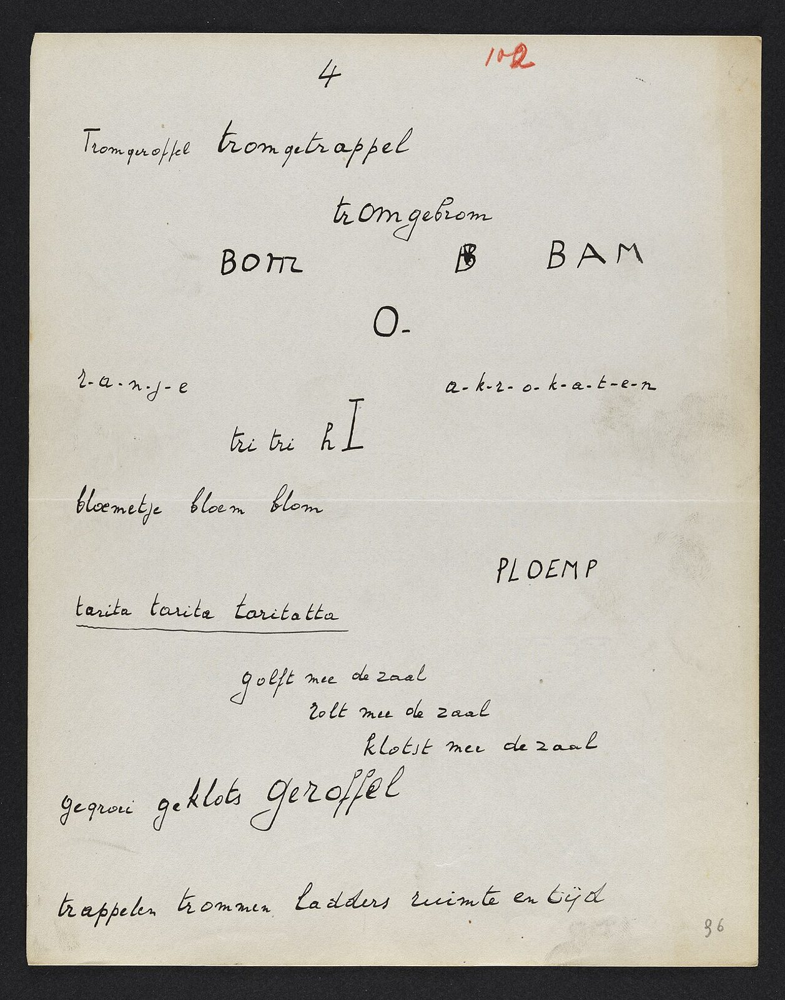

References / Other / 455
Paul van Ostaijen, manuscript of Bezette Stad, 1920–1921
In the handwritten draft of his “rhythmic typography” poem cycle, Paul van Ostaijen already lays out words as sound: isolated words, letter-spaced words, and capitals scattered across the sheet.
- Source
- Wikimedia Commons: Bezette Stad manuscript, sheet 102r (Letterenhuis EHC 859433)
- Creator
- Paul van Ostaijen (1896–1928)
- Made
- Between 1920 and 1921 (Commons). Written in Berlin between July 1920 and April 1921 (Literaire Canon).
- Style
- Dada (agent-proposed, not yet reviewed by a person)
- Moods
- Experimental, raw, chaotic
- Evidence
- Inspected manuscript sheet 102r on Commons (viewed at 1200 px from the 1280 px thumbnail), and sheet 58r for comparison (Commons). Commons gives the source as “DAS Antwerp”; the file names carry the collection number EHC 859433. The printed 1921 book was not inspected.
- Reviewed
- Rights
- Open license, stored. License: public domain. Rights policy


Context
Van Ostaijen wrote Bezette Stad (Occupied City) in Berlin between July 1920 and April 1921. The first edition appeared in 1921 from his own Antwerp publishing house Sienjaal. Literaire Canon: Bezette Stad.
A bookseller’s description of the first edition credits its typography to O. Jespers and R. Victor and gives an edition of 540 copies. Arine van der Steur.
Flanders bought the complete manuscript and placed it on the Flemish heritage list. It is kept at the Letterenhuis in Antwerp from 27 March 2021. VRT NWS.
Wikipedia names Dadaism among the influences on his poetry. Wikipedia: Paul van Ostaijen.
Observed
- The sheet is greyish paper with black ink, a red folio number “102” at the top, and a central fold.
- Words sit at many positions on the page, not in lines from one margin: “BOM”, a struck-through “B”, and “BAM” spread across one row, “O-” alone below them, and “PLOEMP” at the right.
- Some words are capitals in a print-like hand; most are in a cursive script. Size changes from small script to large capitals.
- Two words are letter-spaced with dots: “r-a-n-j-e” and “a-k-r-o-k-a-t-e-n”.
- Some lines step to the right in a staircase: “golft mee de zaal / rolt mee de zaal / klotst mee de zaal”.
- On sheet 58r the poet also draws a small box labelled “Obus” and a large bracket-shaped letter H.
Why it belongs
The manuscript shows that the scattered layout was part of the writing, not only a printer’s idea. It belongs to the same freeing of type from the line as Dada and Futurist poetry, but without printer’s cuts or photographs.
Borrow
Place sound words as separate units across the width, and let white space set the rhythm.
Letter-space a word with dots or hyphens to slow its reading.
Step a repeated phrase down and to the right.
Measured
Machine-extracted by tools/image-traits.py on . Full measurement.
- Mean chroma
- 0.04
- Palette
- #d8d5cf 65%
- #d0ccc1 15%
- #262628 13%
- #ccc2a9 2%
- #9d978d 1%
- #868076 1%
- #b3aea3 1%
- #6b6760 1%

